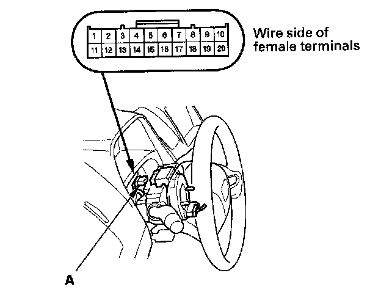
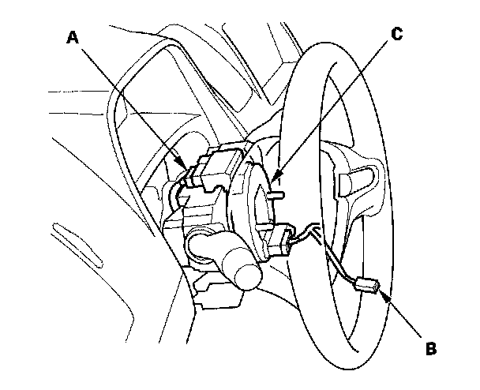

Horn Switch Test
Horn Switch Test1. Remove the steering column covers.

2. Disconnect the cable reel 20P connector (A) from the dashboard wire harness.
3. Using a jumper wire, connect the No. 10 terminal of the dashboard wire harness 20P connector to body ground. The horn should sound.
- If the horn sounds, go to step 4.
- If the horn does not sound, check these items
- No. 12 (15 A) fuse in the under-hood fuse/relay box.
- MICU.
- Horn.
- An open in the wire.

4. Reconnect the cable reel 20P connector (A) to the dashboard wire harness.
5. Remove the driver's airbag assembly, and disconnect the horn switch 1P positive terminal (B) from the cable reel (C).
6. Using a jumper wire, connect the 1P connector to body ground.
- If the horn sounds, replace the driver's airbag assembly.
- If the horn does not sound, check these items:
- Cable reel.
- An open in the wire.